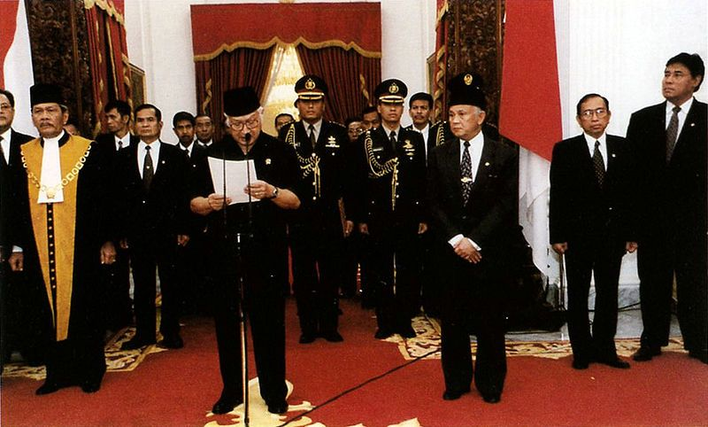

Masa Reformasi (1998-Sekarang)
Masa reformasi adalah masa yang dilewati pemerintah dan bangsa Indonesia untuk mencapai sistem yang lebih baik lagi. Pada masa ini, terjadi pembaharuan segala sistem dari berbagai aspek. Termasuk di antaranya yaitu tata pemerintahan, ekonomi, sosial, dan lain-lain. Masa reformasi dimulai dari kepemimpinan BJ Habibie sebagai presiden untuk menggantikan Soeharto yang telah mengundurkan diri. Masa ini terjadi saat awal kejatuhan orde baru setelah adanya gerakan reformasi dari berbagai masyarakat pada tahun 1998. Reformasi disebabkan oleh banyaknya krisis yang terjadi pada politik, ekonomi, hukum, sosial, dan juga krisis kepercayaan masyarakat terhadap pemerintahan yang ada. Selain itu, Presiden Habibie membuat reformasi berskala besar pada sistem pemerintahan yang ada. Sistem tersebut dijalankan dengan adanya keterbukaan dan nilai demokrasi yang lebih ditonjolkan.
|
 |
Ciri-ciri dari masa reformasi :
- Pemilu lebih demokratis
Pemilu yang dilakukan lebih demokratis daripada sebelumnya. Pemilu juga terus berkembang memberikan jalan bagi rakyat untuk menggunakan hak politiknya.
- Rotasi kekuasaan dari pemerintah pusat hingga daerah
Kekuasaan terdapat dari pemerintah pusat hingga tingkat daerah. Mereka juga hanya bisa menjabat maksimal 2 periode.
- Pola rekrutmen politik terbuka
Rekrutmen politik untuk pengisian jabatan politik dilakukan secara terbuka. Setiap warga negara yang mampu serta memenuhi syarat memiliki hak untuk menduduki jabatan politik tanpa diskriminasi.
- Hak-hak dasar warga negara terjamin
Sebagian besar hak dasar rakyat bisa terjamin seperti adanya kebebasan menyatakan pendapat, berserikat, kebebasan pers, dan sebagainya.
|
Masa reformasi memiliki beberapa keunggulan. Salah satunya adalah rakyat memiliki banyak kebebasan dalam berpendapat dan tidak ada lagi kekerasan bagi orang yang mengkritik pemerintah. Lalu, banyaknya pembentukan partai-partai baru. Ada juga perbaikan dalam Hak Asasi Manusia (HAM) yang sebelumnya banyak dilanggar pada masa Orde baru. Selain itu, keadilan dalam masyarakat semakin terasa dan menyeluruh dan otonomi daerah mulai diterapkan, hal ini dilakukan agar daerah memiliki kewenangan yang lebih terhadap daerahnya.
|
Selain itu, sistem demokrasi pancasila memiliki beberapa kelemahan. Pertama, meningkatnya kriminalitas akibat perlindungan HAM yang tidak seimbang. Kedua, maraknya teroris akibat melemahnya pertahanan dan keamanan negeri. Ketiga, banyaknya demonstrasi dari para aktivis untuk menyalurkan aspirasi.
|
Tujuan masa reformasi :
- Menuntut turunnnya harga-harga kebutuhan pokok yang melonjak tinggi sejak Juli 1997.
- Menuntut MPR untuk tidak kembali mencalonkan Soeharto sebagai presiden untuk periode ketujuh.
- Menjelang lengsernya Soeharto, para pejabat melakukan perjanjian simbolik dan beberapa langkah kebijakan ekonomi guna untuk mencoba mengatasi keadaan dan mempertahankan kekuasaan (buying time).
|